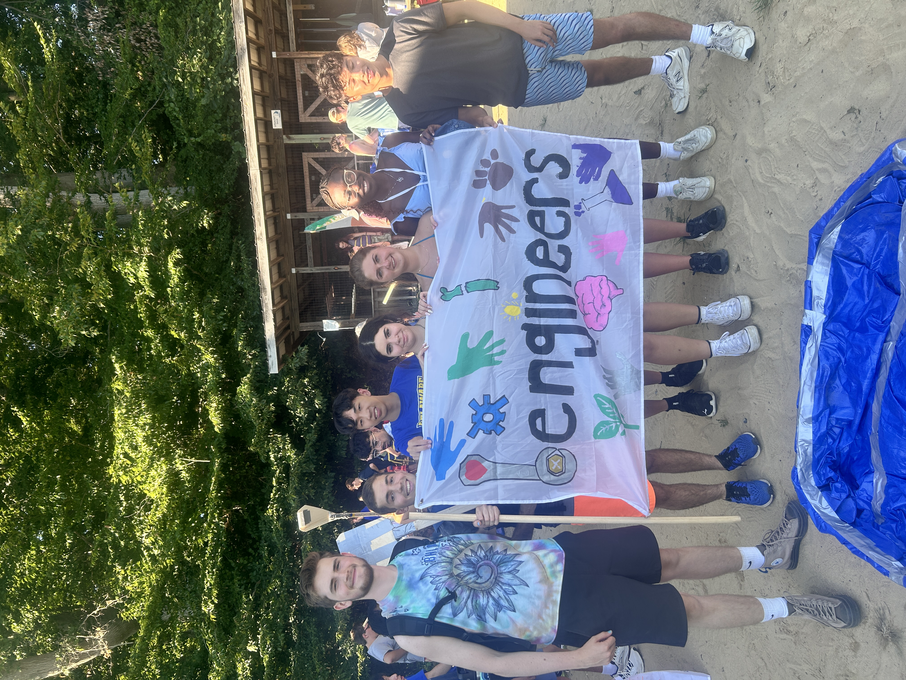
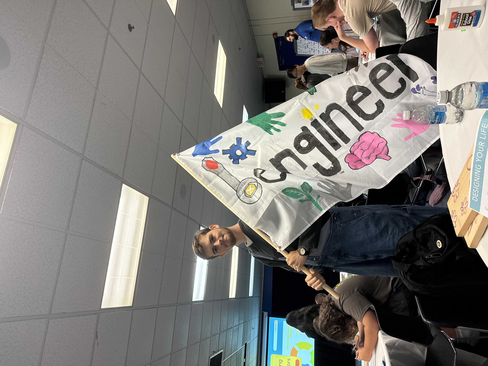
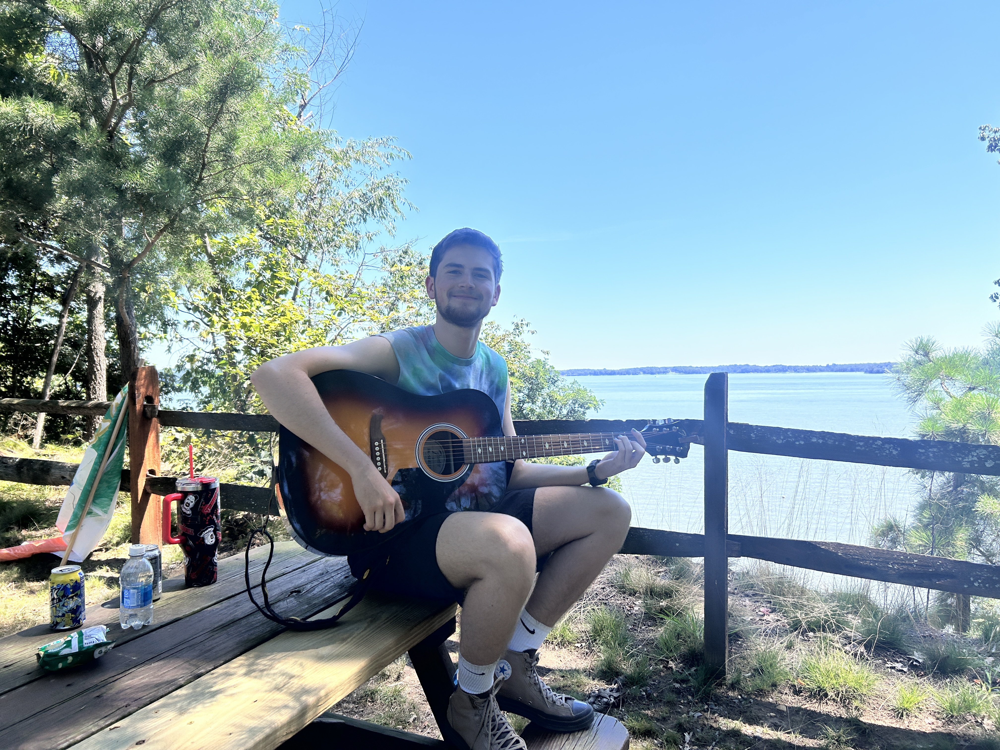
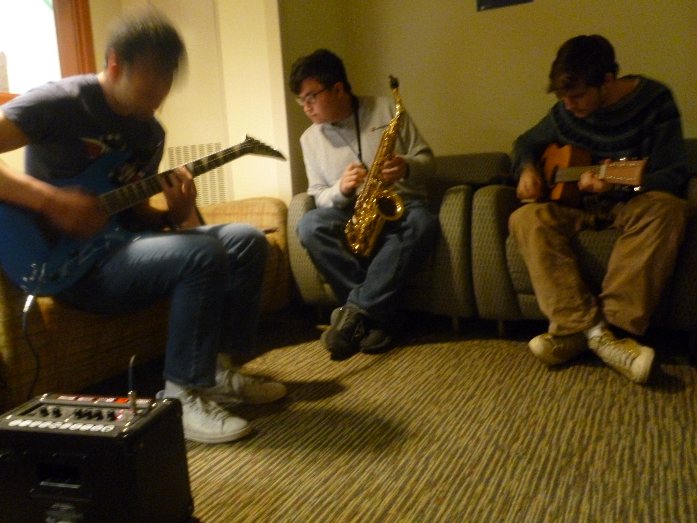
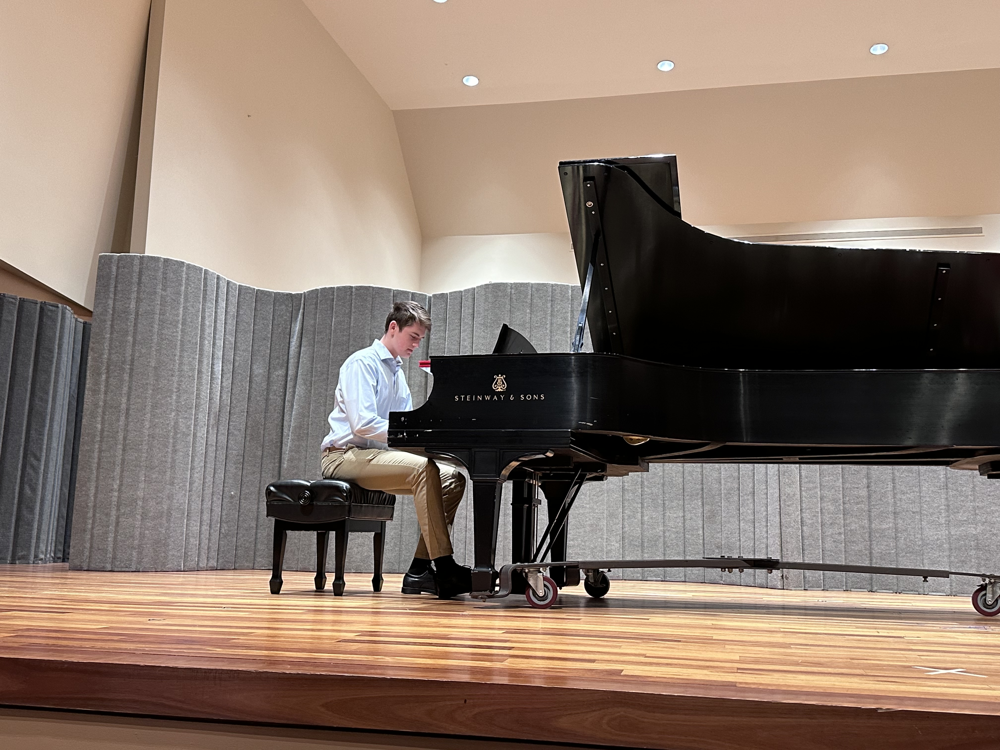
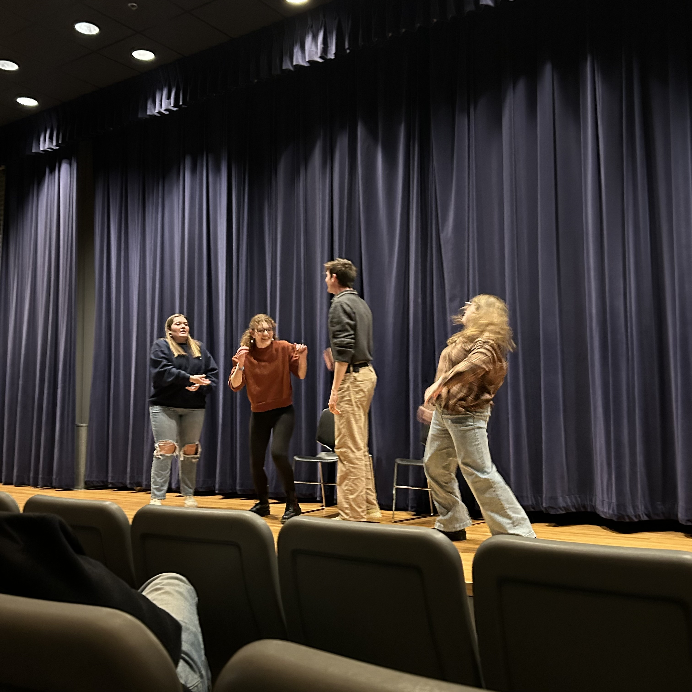
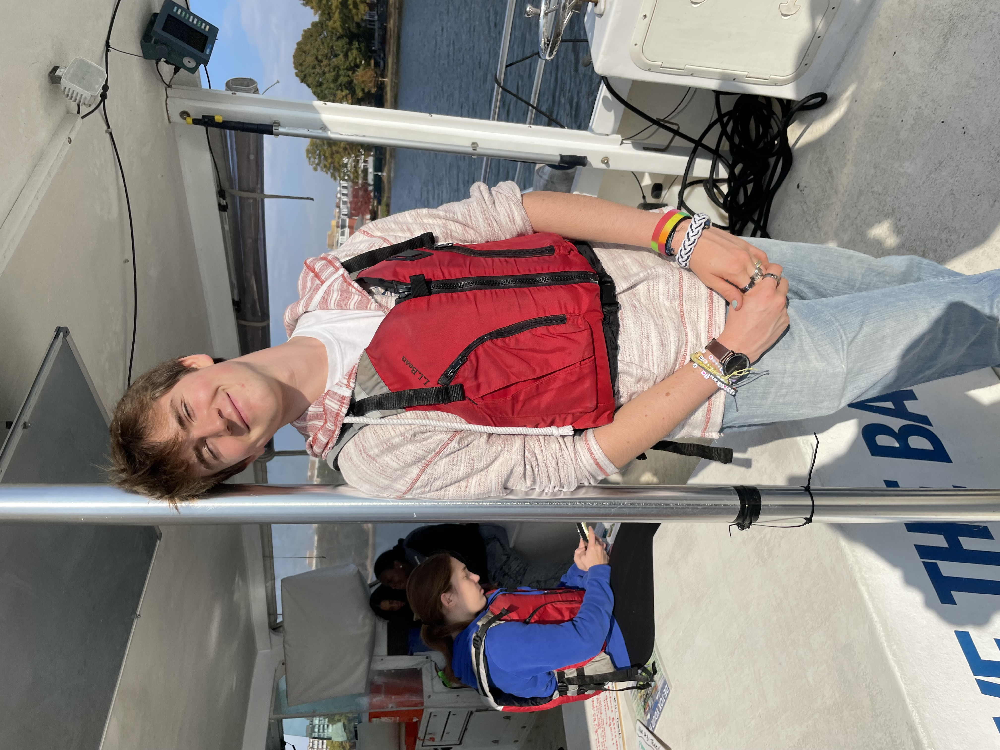
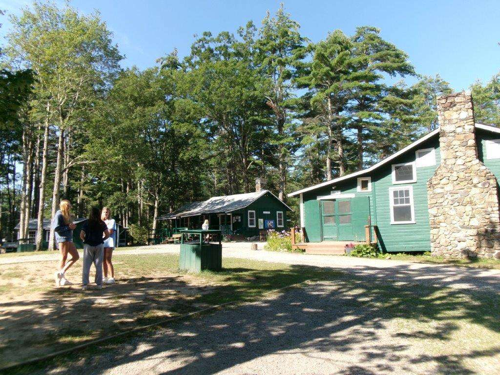

Hi, I'm Ben, it's nice to meet you.
I enjoy creating unique programs with real world applications. Explore a few projects below.
Explore by area
Click a topic to jump to its section and read more.
About
I'm a college student focused on the intersection of Computer Science and Linguistics. My interests include activism for underserved causes and communities, training and harnessing LLMs for social good, and building ethical AI systems that bridge cultural and linguistic divides.
Recent Projects
- Loading projects…
Leadership
Leading student organizations and mentoring peers has shaped my approach to inclusive leadership, project design, and community-building. I strive to create spaces where others can thrive, grow, and lead.
- Founder & President, Governmental Debate Club — Launched and led a high school debate society focused on policy analysis and public speaking. Organized weekly meetings, debate tournaments, and civic engagement events. (2022–2024)
- Peer Mentor, QUEST Program — Completed 100+ hours of leadership training through UD’s Center for Leadership, Innovation, and Service. Mentored first-year students via monthly check-ins, academic workshops, and social events. Represented the Center at university-wide outreach and service initiatives. (2024–Present)
- Founder & Director, Bitwise Blues Jazz Club — Created a student organization uniting CS majors through jazz performance and creative coding. Led rehearsals, organized performances, and launched an AI-powered music analysis project. (2024–Present)


Music
Music is where I explore creativity, collaboration, and technical curiosity. I’ve performed, directed, and even coded around music—bridging jazz improvisation with machine learning.
- Founder, Bitwise Blues Jazz Club — Led weekly jam sessions and rehearsals, fostering community among CS students through jazz. Directed performances and spearheaded a project analyzing chord patterns with AI. (2024–Present)
- AI Camp Lyric Generator — Built a generative chatbot trained on a custom lyric database, blending music theory with natural language processing. (2023)


Performance
Performance has sharpened my timing, adaptability, and communication. Whether on stage or behind the scenes, I bring energy and precision to every production.
- Technical Manager, Rubber Chickens Comedy — Manage tech operations for UD’s sketch comedy troupe. Support live shows with seamless audio/visual execution, and maintain the organization's webpage https://www.rubberchickensimprov.com/home. As well as participating in improv comedy shows and festivals across the country. (2025–Present)
- Debate — Led public speaking and debate events in my time as President of the Governmental Debate Club. Developed quick-thinking and audience engagement through comedy, debate, and musical performance. (2022–2024)


Service
Service is central to how I approach leadership and technology. I aim to build tools and communities that reflect empathy, accessibility, and social impact.
- Computer Science + Social Good — Contributed to campus tech accessibility initiatives, advocating for neurodiverse design. Participated in civic tech hackathons focused on sustainability and mental health. (2024–Present)
- QUEST Program Ambassador — Represented UD’s Center for Leadership, Innovation, and Service at university-wide outreach events. Supported service initiatives and mentored incoming students. (2024–Present)
- Initiatives: Ethical AI discussions, inclusive design advocacy, and mentorship for neurodiverse students.


Contact
If you'd like to work together or ask a question, reach out at bmzifcak@udel.edu.